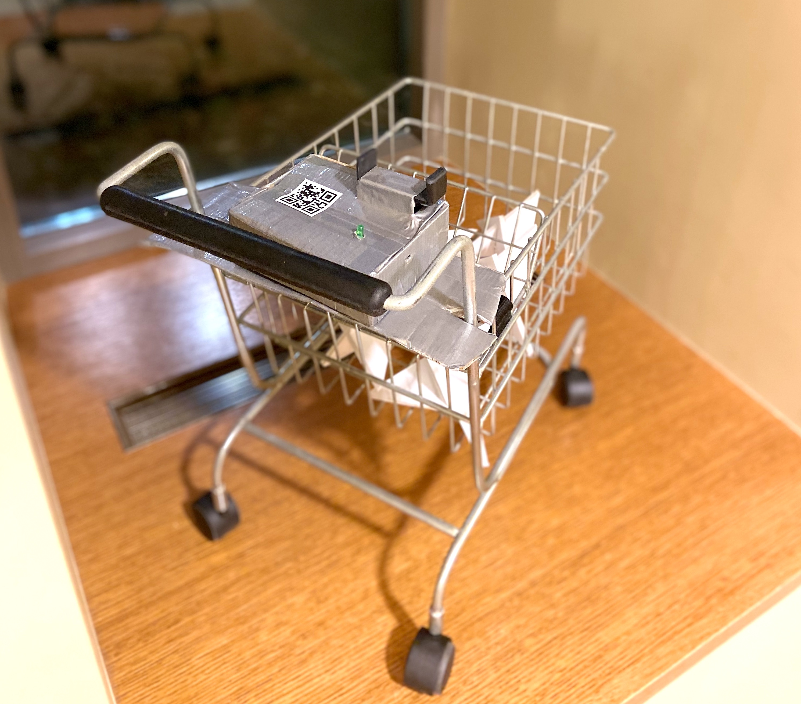
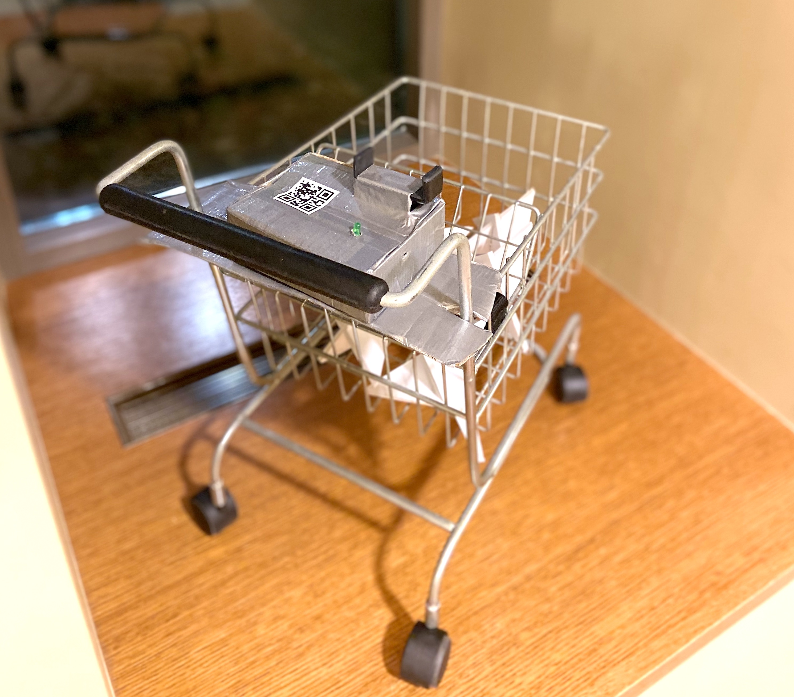
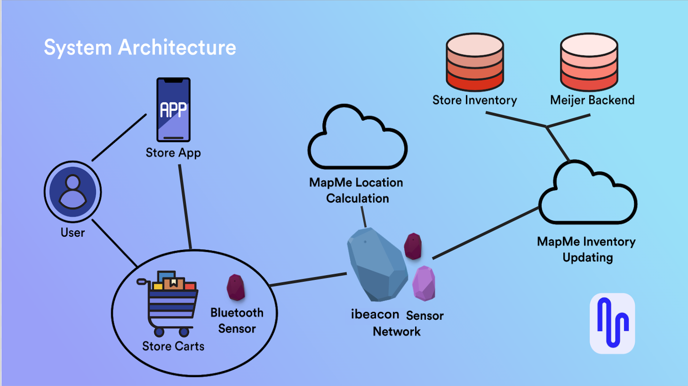

Milestone 5
Final Proposal and Video
MapMe is a grocery shopping system integrated with users’ smartphones and shopping carts to help them improve their shopping efficiency and experience.
MapMe can integrate with any grocery store smartphone app, and users could have a great experience creating a list, syncing with the smart shopping cart, following a responsive “Bird’s-Eye View” map and navigation line to find items, displaying real-time coupon and sale information, and finishing shopping quicker and more enjoyably.
 
Motivation
Most people have probably had shopping trips that looked and felt like this:
We observed that shoppers are usually crisscrossing grocery stores while shopping. The reason, of course, is because they have difficulty finding every last item or forgetting to pick up items along their way. If shoppers are not familiar with the grocery store, it will take much more time to find items.
A recent Gallup Poll shows that 82% of US adults go grocery shopping in a grocery store at least once a week (Jones, 2019). Through our research and interviews during our design process, we also found that relatively everyone wants to see coupons and sales information while they shop. When all these ideas present, it was an excellent opportunity for us to find a better solution to help improve grocery shopping efficiency.
Formative Study and Results
To better understand our possible design solution and narrow down our target audience, we used the following methods and timeline to realize the design of our product.
Our group engaged in an iterative design process to explore various concepts by utilizing different research methods, such as a culture probe and user enactments, before generating our final physical prototype. Below are the fundamental processes and results in our design.
Observations
The most important finding in our observation was that many shoppers seem to backtrack, walk in circles, or zigzag across the store as they fill up their carts, which is not very efficient. This helped validate our initial motivations for the design. For more details of our observation, see Milestone 1.
Cultural Probe
We created a cultural probe to better understand participants’ experience in the grocery store. We asked participants to complete three parts: creating a photo journal during a shopping trip, completing an activity booklet after a trip, and completing a follow-up interview with our team. After sharing notes and insights we gathered from each activity book and follow-up interview, our group got two main results.
- Participants were not worried about finding something because they usually visit same grocery store and also comfortable asking for directions if they can’t find something.
- Participants would like to know if something they want to buy is out of stock.
These results helped to better define our target audience and shift the direction of our design. Rather than a turn-by-turn GPS-like system, we’re focusing on showing shoppers where items on their list are as they move through stores. For more details of our cultural probe, see Milestone 2.
User Enactments

Before conducting our user enactments, we listed several research questions regarding interface preference, navigation method, substitute suggestions and so on, to focus our research and better design and experiment with user enactments. We also chose five scenarios to simulate for shedding light on potential design opportunities.
Based on the results of user enactments and notes we collected from the follow-up interview, we received six key insights, and we chose the two most important insights list below as our key feature in our later prototype.
- Participants prefer the simplistic birds-eye view of the store with markers for list items, rather than turn-by-turn navigation to each item, and a search bar/item look-up with the phone as an interface.
- Participants were eager to see a coupon system integrated with application list that offers personalized discounts when at the store.
At this point, we have refined our design down to a specific system based on what we learned from our user enactments and previous milestones. We also identified the user’s interaction methods with the system and how it will fit into our audience’s grocery shopping routine. For more details of our user enactments, see Milestone 3.
Experience Prototype and Results
Our prototype is comprised of an interactive Invision prototype to act as the smartphone application, a smart cart with electronics, and physical products and props to simulate a grocery store.


For the user interface screen, we created a mockup to help improve users’ interaction with our product. The basic interaction within are creating a list, syncing with the smart cart, viewing the store floor plan, and coupon notifications. For the smart cart, we put all components in a box on the shopping cart, and the LED light will change to green to indicate a successful connection between the phone and cart. The light is controlled by a Particle photon microcontroller in the box, and we wrote C++ code to turn the light on and off for our demo. Our prototypes cover many aspects of the real shopping experience for users.
After we conducted the demo with these prototypes, our classmates were mostly concerned about privacy, which is a common issue that almost every application faces. How to protect users’ information and gain users’ trust is essential for every product, and is something this design needs to consider closely.
Final System Concept
Key Features
- List Creation: MapMe allows users to create or add to a shopping list at any time.
- QR Code: MapMe lets users scan a QR code to pair their phone with a smart shopping cart which has a Bluetooth sensor in it.
- “Bird’s-Eye” view: after syncing with the cart, the users’ phone interface will show the location of all the items that users added in their list as well as the user themselves.
- Coupon Integration: MapMe will automatically integrate coupons with the list so that users could see if there is any discount on the items they’re buying.
- Navigation: MapMe will give users navigation lines towards items, but only when users ask for it.
Demonstration Video
Ideal System Proposal
The final proposed system consists of a sensor network that integrates with existing grocery store smartphone applications. Users pair their phone with a shopping cart by scanning the unique QR code on the cart, which establishes a Bluetooth connection. A network of indoor positioning sensors throughout the store will communicate with the hardware on cart with iBeacon technology. The cart communicates with the users phone via Bluetooth to show their location and where all the items are on their list on a bird’s-eye-view floor plan of the store.
This product would be sold to grocery store chains, Meijer in the example above, rather than exist as a standalone app for users to download. We would work with them to integrate our location-finding technology into their existing smartphone app, implement our sensor networks throughout their stores, and map their floor plans.
Reflection
We learned a lot about how people shop for items in grocery stores during this design process. We feel like we incorporated well what our research taught us, but there are certainly limitations to this design and areas that could be improved or further explored.
Currently, this design requires users to own and use a smartphone to use this item-finding system. This is something we tried to avoid at the beginning of our design process, but our research led us to a smartphone-centric design.
Additionally, privacy remains a concern with a system like this. We gave users a clear and explicit way to disconnect their phone from the grocery cart, but users are also being tracked every step of the way through the store. Further research is required to see how much this bothers our target users.
This system also depends on how well a network of indoor positioning sensors can support a large number of users in a small space. For the sake of this project we are assuming that will work. However, our next steps should be to build the network we’re imagining and perform stress tests. How many users can it support in a large area? A small area? How many sensors are needed? How precisely can we calculate the user’s location?
While preparing and performing the demo we learned that users might be nervous about leaving their phones mounted on their grocery cart. They imagined it would be easy to steal while they’re distracted. The next physical prototype needs to include some sort of security device to ease those worries.
Overall, we believe this research process could have benefitted from a more thorough competitive analysis, or more research into technology that’s currently being used in shopping situations more generally. Additionally, we lacked strong evidence for making claims about our users because our sample sizes were small. Gathering more initial data through a survey would have given us a better picture of our target users, and would have served as a nice way to collect contact info for our future research methods.
Sources
Jones, J. & Kashanchi, S. (August 20, 2019). Online Grocery Shopping Still Rare in U.S. Retrieved December 6, 2019, from https://news.gallup.com/poll/264857/online-grocery-shopping-rare.aspx